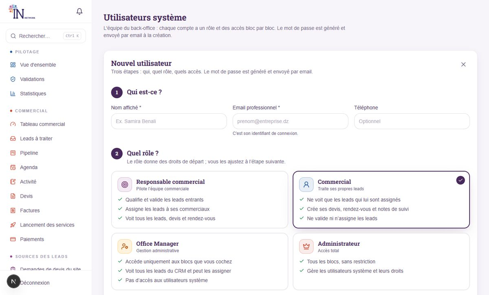
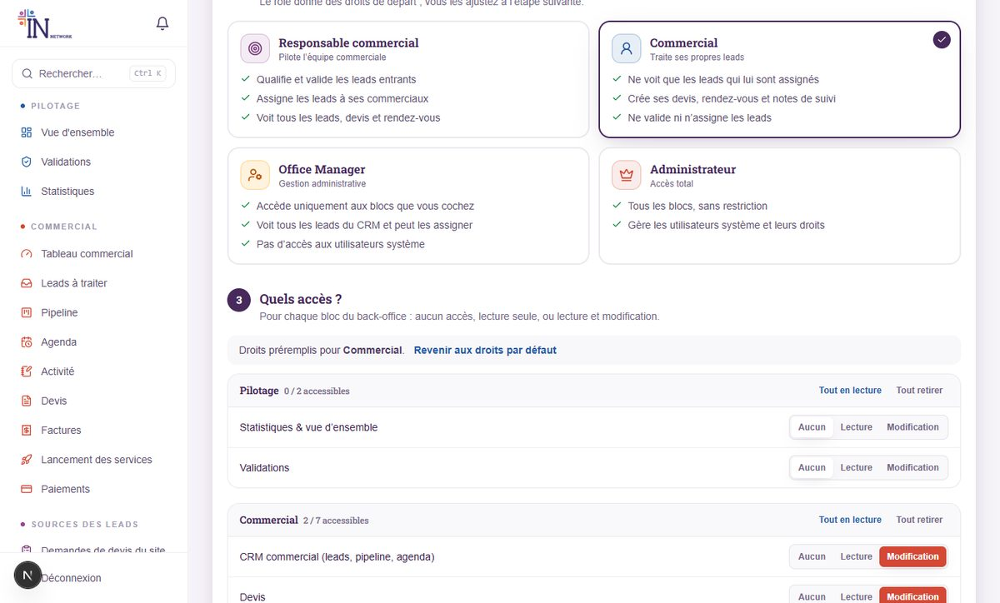
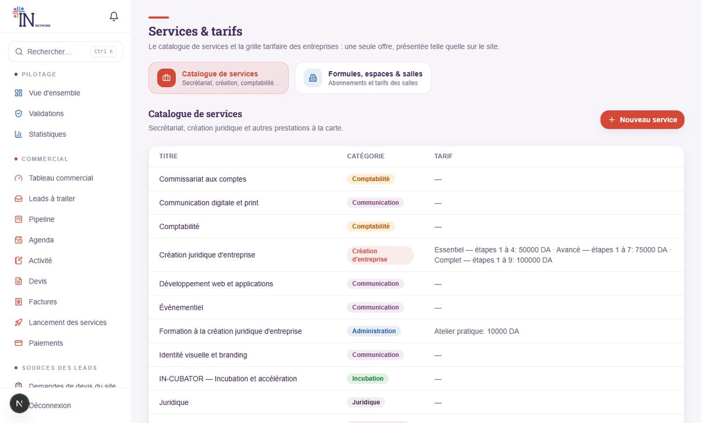

1 Votre rôle
Vous avez accès à tout le back-office. C’est vous qui décidez ce que chaque membre de l’équipe voit et peut modifier.
| Rôle | Ce qu’il peut faire |
|---|---|
| Super administrateur | Tout, y compris créer des administrateurs. Son compte ne peut être ni modifié ni supprimé depuis l’interface. |
| Administrateur | Tous les blocs du back-office, et la gestion des utilisateurs système (rôles Responsable commercial, Commercial, Office Manager). Il ne peut pas créer d’autre administrateur. |
Les autres rôles (Office Manager, Responsable commercial, Commercial) n’ont aucun accès par défaut à ce que vous ne leur avez pas accordé. Seuls les administrateurs voient « Utilisateurs système ».
2 Premiers pas
Connexion, mot de passe, notifications et recherche rapide.
- Connectez-vous sur
votre-site/adminavec votre email et votre mot de passe. La session du back-office est indépendante de celle du site : vous pouvez être connecté aux deux en même temps. - Changez votre mot de passe si c’est une première connexion : menu Système → Mon compte (au moins 8 caractères). Cette page existe pour tous les comptes du back-office.
- Repérez la cloche 🔔 en haut de la barre latérale : elle signale les nouveaux leads, les messages et les alertes. Un clic sur une notification ouvre directement la bonne page.
- Essayez la recherche rapide : Ctrl + K (ou ⌘ + K) cherche un lead, un devis ou une facture par nom, société ou numéro.

Le menu, section par section
| Section | Contenu |
|---|---|
| Pilotage | Vue d’ensemble, Validations (tout ce qui attend une décision), Statistiques. |
| Commercial | Tableau commercial, Leads à traiter, Pipeline, Agenda, Activité, Devis, Factures, Lancement des services, Paiements. |
| Sources des leads | Demandes de devis du site et Messages de contact : les « boîtes de réception » d’où naissent des leads. |
| Communauté | Membres, Entreprises, Réservations, Événements, Experts, Partenaires, Témoignages. |
| Catalogue & site | Services & tarifs, Galerie du lieu. |
| Système | Mon compte (pour tous : mot de passe) et Utilisateurs système (administrateurs uniquement). |
Un menu n’apparaît que si le compte y a droit. Si un collègue dit « je ne vois pas telle page », c’est presque toujours une question de droits : voir la section suivante.
3 Créer l’équipe et régler ses accès
Menu Système → Utilisateurs système. La création se fait en trois étapes : qui, quel rôle, quels accès.
Créer un utilisateur
- Cliquez sur « Ajouter un utilisateur », puis renseignez le nom affiché, l’email professionnel (c’est l’identifiant de connexion) et, si vous le souhaitez, le téléphone.
- Choisissez le rôle en cliquant sur l’une des quatre cartes : chacune résume ce que la personne verra et pourra faire.
- Ajustez les accès bloc par bloc. Les droits du rôle sont préremplis ; le bouton « Revenir aux droits par défaut » les rétablit.
- Cliquez sur « Créer et envoyer les accès » : un mot de passe est généré et envoyé par email à la personne. Vous ne le voyez jamais.

Les quatre rôles
| Rôle | Pour qui ? | Ce qu’il fait |
|---|---|---|
| Responsable commercial | Le chef de l’équipe commerciale | Qualifie et valide les leads entrants, les assigne à ses commerciaux, voit tous les leads, devis et rendez-vous. |
| Commercial | Les vendeurs | Ne voit que les leads qui lui sont assignés (et leurs devis, factures, rendez-vous, journal). Ne valide ni n’assigne. |
| Office Manager | La gestion administrative du lieu | Accède aux blocs que vous cochez. Voit tous les leads du CRM et peut les qualifier et les assigner dès qu’il a accès au CRM. Pas d’accès aux utilisateurs système. |
| Administrateur | Direction, responsable technique | Accès total. Ne peut être créé que par un super administrateur. |
Régler les accès : Aucun, Lecture ou Modification
Pour chaque bloc (Membres, Devis, Événements…), choisissez :
- Aucun : le menu n’apparaît pas et l’API refuse l’accès.
- Lecture : la personne consulte, sans rien modifier.
- Modification : elle consulte et modifie.
Les blocs sont regroupés par thème (Pilotage, Commercial, Communauté, Catalogue & site) ; les boutons « Tout en lecture » et « Tout retirer » de chaque groupe font gagner du temps.

Deux droits particuliers du CRM
Ce ne sont pas des blocs mais des cases à cocher :
- « Voir les leads de toute l’équipe » : sans elle, un compte ne voit que ses leads assignés.
- « Qualifier, valider et assigner les leads » : réservé en principe au responsable commercial.
Le Responsable commercial et l’Office Manager ont ces deux droits d’office dès qu’ils ont accès au CRM. Pour qu’un commercial exceptionnel voie toute l’équipe, cochez simplement la première case.
Modifier un compte existant
- Gérer les accès : ouvre les cartes de rôle et la matrice. Changer de rôle remplace les droits par ceux du rôle (une confirmation est demandée), puis vous pouvez les ajuster.
- Mot de passe : envoie un nouveau mot de passe par email et déconnecte les sessions ouvertes.
- Désactiver / Réactiver : la personne ne peut plus se connecter, sans perdre son historique. À privilégier au départ d’un collaborateur.
- Corbeille : suppression définitive (à réserver aux comptes créés par erreur).
Vous ne pouvez pas modifier ni supprimer votre propre compte, ni celui d’un super administrateur, depuis cet écran. Seul un super administrateur peut créer ou promouvoir un administrateur.
4 Qui voit quoi ?
Résumé du comportement par défaut. Vous pouvez toujours ajuster compte par compte.
| Fonction | Admin | Office Manager | Resp. commercial | Commercial |
|---|---|---|---|---|
| Voir tous les leads | Oui | Oui | Oui | Ses leads seulement |
| Qualifier, valider, assigner | Oui | Oui (si accès CRM) | Oui | Non |
| Créer devis et rendez-vous | Oui | Selon droits « Devis » | Oui | Sur ses leads |
| Factures, lancement des services | Oui | Selon droits | Lecture par défaut | Non par défaut |
| Modèles de devis, automatisations | Oui | Oui | Oui | Non |
| Membres, événements, galerie… | Oui | Selon droits | Non par défaut | Non |
| Utilisateurs système | Oui | Non | Non | Non |
Le cloisonnement est appliqué par le serveur, pas seulement par l’interface : un commercial qui tente d’ouvrir le lead d’un collègue obtient « introuvable ».
5 Le parcours d’un client, de bout en bout
Un seul flux, du premier contact à la facture. Comprendre ce schéma, c’est comprendre toute la plateforme.
1. D’où viennent les leads ?
Trois sources alimentent automatiquement le CRM. Chacune crée un lead « À qualifier » et prévient le responsable commercial par une notification :
- Inscription d’un membre sur le site (« Devenir membre »).
- Demande de devis envoyée depuis le site ou depuis l’espace membre (le panier « Ma demande »).
- Formulaire de contact.
On peut aussi créer un lead à la main (appel, visite, recommandation) avec « Nouveau lead ».
2. Qualification et validation
Le responsable commercial ouvre Leads à traiter, clique sur « Qualifier » : il note la température (froid / tiède / chaud), le besoin, le budget, le décideur et le délai, puis valide ou écarte (avec un motif).
Pour une inscription, qualifier = valider le compte du membre. Une case « Valider aussi le compte membre » (cochée par défaut) déverrouille son espace et le prévient. À l’inverse, valider un compte depuis la page Validations fait passer son lead d’inscription à « À assigner ». C’est un seul geste, pas deux.
3. Assignation et suivi
Le lead validé est assigné à un commercial (avec la charge de chacun affichée pour répartir équitablement). Le commercial le travaille : appels, rendez-vous, notes. Dès son premier appel, email, réunion ou visite, le lead passe automatiquement à « Contacté ».
4. Devis, facture, paiement, lancement
- Devis créé depuis la fiche du lead (vierge, pré-rempli avec la demande du site, ou depuis un modèle). À l’envoi, le client reçoit le PDF par email et le lead passe « Devis envoyé ». Sans réponse, il est relancé automatiquement.
- Facture créée depuis un devis accepté. Le numéro (FA-AAAA-0001…) n’est attribué qu’à l’émission, ce qui garantit une suite sans trou. Une facture émise n’est plus modifiable, seulement annulable avec un motif.
- Paiement enregistré (virement, espèces, chèque, carte). Le lead passe « Gagné ».
- Lancement du service : le paiement crée une commande de service par ligne de facture, avec sa checklist. Une ligne « formule d’abonnement » active en plus l’abonnement du membre.
Côté membre, tant que son compte n’est pas validé, il ne voit que « Situation du compte » (devis, envoi du reçu de paiement). Quand il envoie un reçu, il apparaît dans Validations → Justificatifs de paiement : on l’accepte (en option : enregistrer le paiement et valider le compte) ou on le refuse avec un motif.
Les identifiants légaux (NIF, RC, AI, NIS, RIB) figurent sur les devis et factures uniquement s’ils sont renseignés dans la configuration (section 9). Tant qu’ils sont vides, ils n’apparaissent pas : ne jamais les inventer.
6 Piloter l’activité
Où regarder pour savoir si tout avance.

- Vue d’ensemble : membres, abonnements, réservations, revenu, et résumé de la chaîne commerciale.
- Tableau commercial : indicateurs clés, entonnoir par étape, leads par commercial, encaissements sur 6 mois. Un commercial n’y voit que ses propres chiffres.
- Activité : le journal de l’équipe (appels, visites, emails, notes) par jour : c’est le reporting quotidien.
- Statistiques : inscriptions et réservations dans le temps.
Les automatisations (chaque heure)
| Règle | Comportement |
|---|---|
| Devis sans réponse | Relance par email au client tous les 3 jours, 2 fois maximum. Un devis dont la validité est dépassée passe « Expiré ». |
| Factures échues | Rappel de paiement au client chaque semaine, 3 fois maximum. |
| Action à mener | Alerte au commercial quand la « prochaine action » d’un lead arrive à échéance. |
| Lead dormant | Alerte après 7 jours sans activité. |
| Rendez-vous | Rappel dans les 24 heures. |
Le bouton « Exécuter maintenant » du Tableau commercial les lance à la demande (réservé aux comptes qui gèrent les leads).
7 Catalogue, tarifs et contenu du site
Ce que vous modifiez ici se voit tout de suite sur le site public.
Services & tarifs
Menu Catalogue & site → Services & tarifs, avec deux vues :
- Catalogue de services : créer ou modifier un service (titre, catégorie, description, prix). Un service peut avoir plusieurs paliers de prix (ex. WORK / NET / NETWORK) ou être « sur devis » (sans prix).
- Formules et salles : formules d’abonnement (mensuelles, annuelles), bureaux, salles de réunion avec leurs tarifs membre et externe.

Pour retirer une offre du site sans perdre l’historique des devis qui la citent, masquez-la au lieu de la supprimer.
Autres contenus
| Menu | À quoi ça sert |
|---|---|
| Événements | Créer en brouillon, puis Publier (visible sur le site) ; Archiver pour les passés. Types : IN EVENT (interne), externe, co-organisé. Visuel de couverture et vidéo récap possibles. |
| Experts | Fiches de l’annuaire d’experts publié sur le site. |
| Partenaires | Fiches publiées sur la page Partenaires (logo, secteur, description). Une fiche non publiée reste masquée. |
| Témoignages | Avis de membres, texte et/ou vidéo, publiés sur le site. |
| Galerie du lieu | Photos et vidéos réelles du lieu, par catégorie. |
8 Membres, entreprises, réservations, paiements
- Validations : nouveaux membres à valider, justificatifs de paiement, événements en attente, demandes de service, virements bancaires.
- Membres : liste de tous les comptes ; activer / désactiver ou supprimer un compte.
- Entreprises : comptes B2B multi-postes. Vous ajustez le nombre de postes accordés et activez ou désactivez l’entreprise ; le représentant invite ses collaborateurs depuis son espace, dans la limite des postes.
- Réservations : confirmer ou annuler les réservations d’espaces et de salles.
- Paiements : suivi des paiements, confirmation des virements bancaires.
- Messages de contact : lire, répondre par email depuis la page, supprimer. Chaque message a déjà créé un lead (lien affiché).
Le profil membre doit être complet (téléphone, poste, entreprise, présentation, un domaine d’activité) pour qu’il puisse commander, réserver ou demander une mise en relation. Si un membre se plaint d’être bloqué, vérifiez d’abord ce point.
9 Réglages techniques (équipe technique)
À confier au responsable technique ; à garder sous la main.
Mise en ligne d’une nouvelle version
- Sauvegarder la base de données.
- Côté
backend:npm run deploy(applique les migrations, régénère le client de base de données et compile), puis redémarrer le service (PM2). - Si le catalogue ou les compétences ont évolué :
npm run catalogue:sync(option-- --dry-runpour simuler) etnpm run taxonomy:sync. Ces commandes ne suppriment rien. - Côté
frontend:npm run buildpuis redémarrer.
Variables d’environnement utiles (backend/.env)
| Variable | Rôle |
|---|---|
SMTP_*, EMAIL_FROM | Envoi des emails : accès au back-office, devis, factures, relances, validation de compte. |
COMPANY_NAME, COMPANY_ADDRESS, COMPANY_PHONE, COMPANY_EMAIL | Coordonnées imprimées sur les devis et factures. |
COMPANY_NIF, COMPANY_RC, COMPANY_AI, COMPANY_NIS, COMPANY_RIB | Identifiants légaux et bancaires imprimés s’ils sont renseignés. Vides tant que le client ne les a pas fournis. |
CORS_ORIGIN, APP_URL | Adresse du site (autorisation d’appel de l’API, liens dans les emails). |
Au premier démarrage, le compte super administrateur créé par le seed porte un mot de passe provisoire : changez-le immédiatement.
10 Sécurité et bonnes pratiques
- Un compte par personne, jamais de compte partagé : l’historique (« qui a fait quoi ») en dépend.
- Moindre privilège : n’accordez « Modification » que là où c’est nécessaire ; la « Lecture » suffit souvent.
- Départ d’un collaborateur : désactivez son compte le jour même, puis demandez au responsable commercial de réassigner ses leads ouverts.
- Mot de passe oublié : utilisez « Mot de passe » sur sa ligne ; ne communiquez jamais un mot de passe par message.
- Contenu : n’affichez que des informations réelles (tarifs, photos, noms). Ne publiez pas de contenu fictif.
11 Problèmes fréquents
- Un commercial dit qu’il ne voit aucun lead.
- Normal tant que rien ne lui est assigné : il ne voit que ses leads. Demandez au responsable commercial de lui en assigner (Leads à traiter → À assigner).
- « Leads à traiter » n’apparaît pas dans le menu d’un collaborateur.
- Cette page est réservée aux comptes qui peuvent qualifier et assigner : Responsable commercial, Office Manager avec accès CRM, ou un compte auquel vous avez coché « Qualifier, valider et assigner les leads ».
- Un nouvel utilisateur n’a pas reçu ses accès.
- Vérifiez l’adresse email saisie et le dossier spam ; sinon utilisez « Mot de passe » pour renvoyer un nouveau mot de passe. Si rien ne part, la configuration SMTP du serveur est à contrôler.
- Un membre ne peut pas commander ni réserver.
- Son compte n’est pas encore validé, ou son profil est incomplet (téléphone, poste, entreprise, présentation, domaine d’activité).
- Une facture contient une erreur.
- Une facture émise n’est plus modifiable : annulez-la avec un motif et recréez-en une. Le numéro annulé reste dans la suite.
- Je ne reçois pas les notifications.
- La cloche se met à jour toute seule toutes les 20 secondes. Les alertes de nouveaux leads sont envoyées aux comptes qui peuvent qualifier les leads : vérifiez leurs droits.